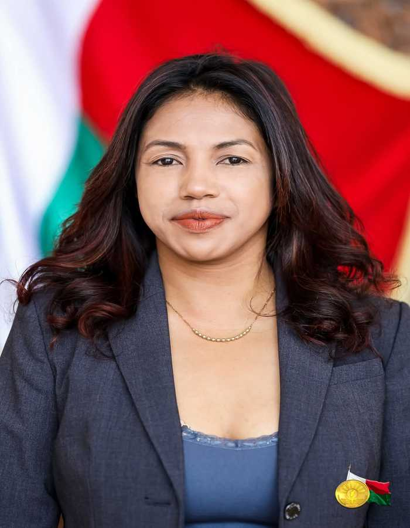
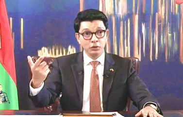
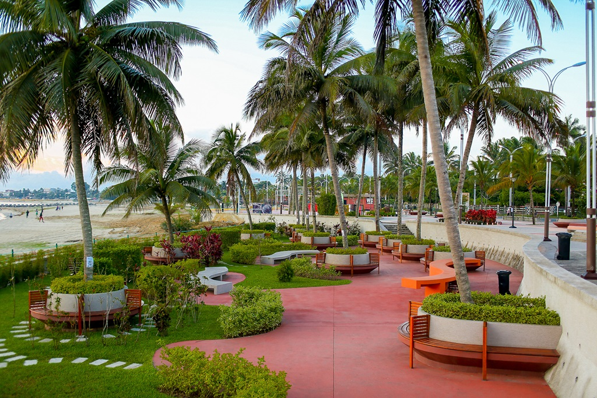
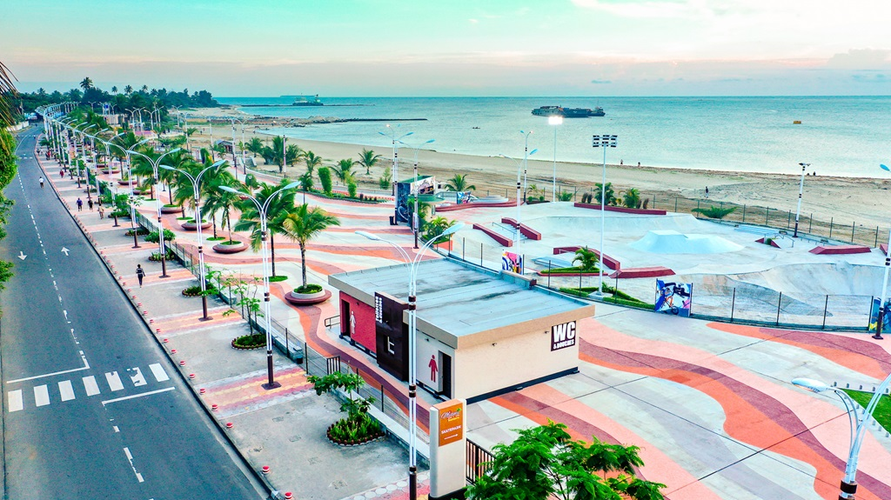
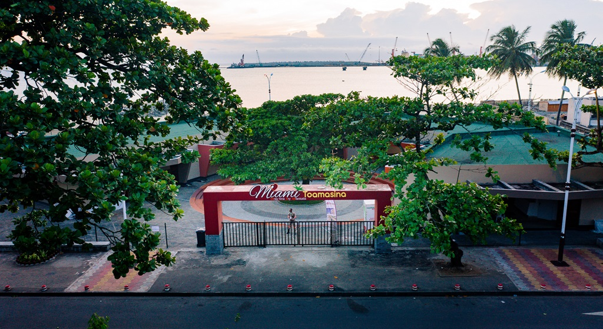

Actualités

Andry Rajoelina au Sommet du COMESA : MADAGASCAR, FUTUR « GRENIER DE L'AFRIQUE

Madame Lalatiana Rakotondrazafy nommée Sénatrice de Madagascar.

Production d'électricité : 25 % des besoins d'Antananarivo couverts par la centrale de 64 MW de Ranomafana dès cette année

Description of certification 4.

Description of certification 5.

Description of certification 6.